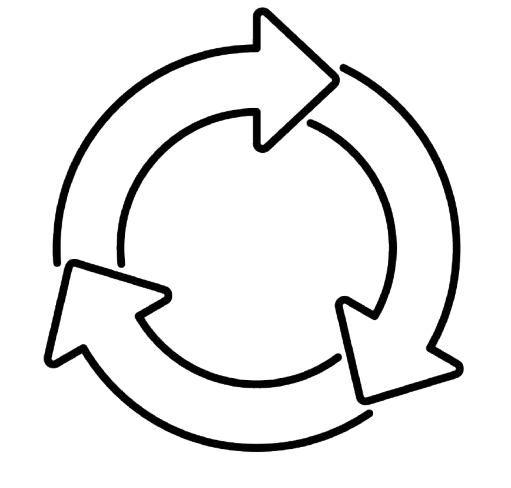

- ¿Que es?
- Arquitectura
- Ventajas
CONTENIDOS
¿Que es?
Docker es un proyecto de código abierto que automatiza el despliegue de aplicaciones dentro de contenedores de software, proporcionando una capa adicional de abstracción y automatización de virtualización de aplicaciones en múltiples sistemas operativos.
Un contenedor de Docker es un conocido contenedor ejecutable, independiente, ligero que integra todo lo necesario para ejecutar una aplicación, incluidas bibliotecas, herramientas del sistema, código y tiempo de ejecución. Docker es también una plataforma de software que permite a los desarrolladores crear, probar e implementar aplicaciones en contenedores de forma rápida.
Los servicios de contenedores o CaaS son servicios gestionados en la nube que administran el ciclo de vida de los contenedores. Los servicios de contenedores ayudan a orquestar (iniciar, detener, ampliar) el tiempo de ejecución de los contenedores. Con los servicios de contenedor, puede simplificar, automatizar y acelerar el desarrollo de sus aplicaciones y el ciclo de vida de su implementación.

Arquitectura y Términos
- Docker Host: es una máquina física o virtual que ejecuta Linux (u otro sistema operativo compatible con Docker-Engine).
- Docker Engine: El software de host de código abierto que crea y ejecuta los contenedores. Los motores de Docker funcionan como la aplicación del servidor del cliente que que admite contenedores en varios servidores Windows y sistemas operativos Linux, como Oracle Linux, CentOS, Debian, Fedora, RHEL, SUSE y Ubuntu.
- Docker Daemon: es un servicio que crea y administra imágenes Docker, utilizando los comandos del cliente. Esencialmente, daemon sirve como centro de control para implementación Docker.
- Contenedores Docker: A diferencia de una máquina virtual que proporciona virtualización de hardware, un contenedor proporciona virtualización ligera a nivel de sistema operativo mediante la abstracción del "espacio del usuario". Los contenedores comparten el núcleo del sistema host con otros contenedores. Un contenedor, que se ejecuta en el sistema operativo host, es una unidad de software estándar que empaqueta código y todas sus dependencias, para que las aplicaciones se puedan ejecutar de forma rápida y fiable de un entorno a otro. Los contenedores no son persistentes y se activan desde imágenes.
- Imagenes de Docker: Colección de software que se ejecutará como un contenedor que incluye un conjunto de instrucciones para crear un contenedor que se pueda ejecutar en la plataforma Docker. Las imágenes no son modificables, de modo que para realizar cambios en una imagen es preciso crear otra nueva.
Ventajas
|  | ||
|---|---|---|
| Portabilidad Fluida y Mejorada | Reutilizacion de Contenedores | Actualizacion Ligera |
| Aunque los contenedores LXC suelen hacer referencia a configuraciones específicas de la máquina, los contenedores Docker se ejecutan sin modificaciones en cualquier escritorio, centro de datos o entorno de computación en la nube . | La reutilización de contenedores es facilitada mediante registros públicos o privados donde los desarrolladores pueden acceder a imágenes preconfiguradas. Docker Hub, por ejemplo, es un registro de código abierto que contiene miles de imágenes de contenedores contribuidas por usuarios de todo el mundo. Estas imágenes pueden ser reutilizadas, modificadas y personalizadas según las necesidades de un proyecto, lo que reduce el tiempo y el esfuerzo de configuración de entornos de desarrollo o producción. | Con Docker, los desarrolladores pueden combinar varios procesos en un único contenedor. Esta flexibilidad permite crear una aplicación que puede seguir funcionando mientras una de sus partes está fuera de servicio para una actualización o reparación. |
 |
||
| Escalabilidad | Automatización | Eficiencia de Recursos |
| Facilita la escalabilidad de las aplicaciones. Puedes crear múltiples instancias de un contenedor y distribuir la carga de trabajo de manera eficiente mediante herramientas de orquestación de contenedores como Kubernetes o Docker Swarm. Esto permite adaptar rápidamente la capacidad de tu aplicación según la demanda, lo que es esencial en entornos de alta carga. | con la ayuda de las tareas cron y los contenedores Docker, los usuarios pueden automatizar su trabajo fácilmente. La automatización ayuda a los desarrolladores a evitar tareas tediosas y repetitivas, así como a ahorrar tiempo. | utiliza menos recursos en comparación con las máquinas virtuales tradicionales. Debido a que los contenedores comparten el mismo kernel del sistema operativo subyacente, son mucho más ligeros y requieren menos espacio en disco y memoria RAM. Esto permite ejecutar más aplicaciones en una sola máquina, lo que ahorra costos de hardware y facilita la administración de recursos. |